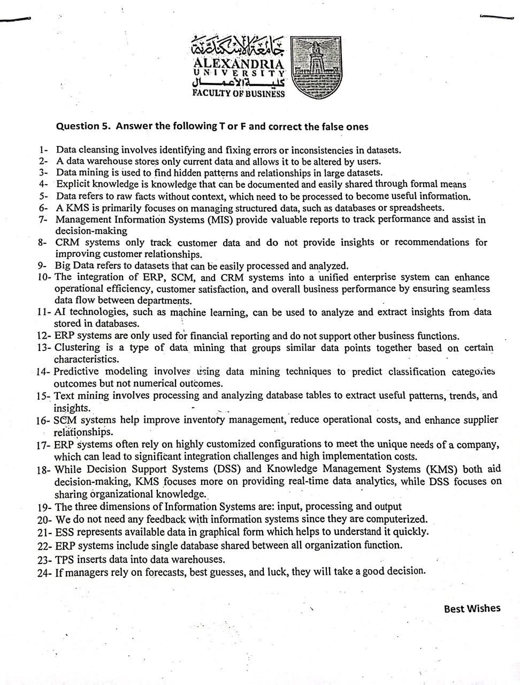

The 24 True / False statements
The one objective block she has used (on the Enppi paper). The instruction is "answer True or False and correct the false ones", so a wrong statement still needs the right fix. Every item below has the verdict and, where false, the correction.
Where it comes from: almost all of it is Chapter 5
(data, warehouses, mining) and Chapter 9 (MIS/DSS/KMS, AI), with a few from Chapter 7
(ERP/CRM/SCM) and Chapter 1 (the system model).
How this block works
Mark it, then fix it
Marking "False" alone earns little, you must say what makes it false. The corrections below are the one-line fixes she is looking for. Green = True as written. Red = False, with the fix.
All 24, answered
The answer key
The actual sheet

| # | Statement | Verdict | If false, the correction |
|---|---|---|---|
| 1 | Data cleansing involves identifying and fixing errors or inconsistencies in datasets. | TRUE | - |
| 2 | A data warehouse stores only current data and allows it to be altered by users. | FALSE | A data warehouse stores historical data and is read-only / non-volatile; users analyse it, they do not alter it. |
| 3 | Data mining is used to find hidden patterns and relationships in large datasets. | TRUE | - |
| 4 | Explicit knowledge is knowledge that can be documented and easily shared through formal means. | TRUE | - (Contrast with tacit knowledge, which is hard to write down.) |
| 5 | Data refers to raw facts without context, which need to be processed to become useful information. | TRUE | - |
| 6 | A KMS is primarily focused on managing structured data, such as databases or spreadsheets. | FALSE | A Knowledge Management System manages knowledge, including unstructured and tacit knowledge (documents, expertise, lessons learned), not mainly structured data. |
| 7 | Management Information Systems (MIS) provide valuable reports to track performance and assist in decision-making. | TRUE | - |
| 8 | CRM systems only track customer data and do not provide insights or recommendations for improving customer relationships. | FALSE | CRM also analyses customer data and provides insights and recommendations to improve relationships, it is not just storage. |
| 9 | Big Data refers to datasets that can be easily processed and analyzed. | FALSE | Big Data is datasets so large and complex that traditional tools cannot easily process them (volume, velocity, variety). |
| 10 | Integrating ERP, SCM and CRM into a unified enterprise system can enhance efficiency, customer satisfaction and performance through seamless data flow. | TRUE | - |
| 11 | AI technologies, such as machine learning, can be used to analyze and extract insights from data stored in databases. | TRUE | - |
| 12 | ERP systems are only used for financial reporting and do not support other business functions. | FALSE | ERP supports many functions, procurement, inventory, manufacturing, maintenance, HR and sales, not just finance. |
| 13 | Clustering is a type of data mining that groups similar data points together based on certain characteristics. | TRUE | - |
| 14 | Predictive modeling uses data mining to predict classification categories but not numerical outcomes. | FALSE | Predictive modelling predicts both categorical (classification) and numerical (regression) outcomes. |
| 15 | Text mining involves processing and analyzing database tables to extract useful patterns, trends and insights. | FALSE | Text mining analyses unstructured text (documents, emails, reports), not database tables. |
| 16 | SCM systems help improve inventory management, reduce operational costs and enhance supplier relationships. | TRUE | - |
| 17 | ERP systems often rely on highly customized configurations to meet a company's unique needs, which can cause integration challenges and high implementation costs. | TRUE | - |
| 18 | DSS and KMS both aid decision-making, but KMS focuses on real-time data analytics while DSS focuses on sharing organizational knowledge. | FALSE | It is reversed: DSS focuses on data analytics and modelling for decisions; KMS focuses on sharing organisational knowledge. |
| 19 | The three dimensions of Information Systems are: input, processing and output. | FALSE | Those are three system activities. An information system has five activities, input, processing, output, storage and control, and uses five resources (people, hardware, software, data, networks). |
| 20 | We do not need any feedback with information systems since they are computerized. | FALSE | Feedback and control are essential to any system; without feedback it cannot self-correct. |
| 21 | ESS represents available data in graphical form which helps to understand it quickly. | TRUE | - (Executive Support Systems use dashboards and visualisation.) |
| 22 | ERP systems include a single database shared between all organization functions. | TRUE | - |
| 23 | TPS inserts data into data warehouses. | FALSE | A Transaction Processing System feeds operational databases; data is then moved to the warehouse by an ETL (extract, transform, load) process, not directly by the TPS. |
| 24 | If managers rely on forecasts, best guesses and luck, they will take a good decision. | FALSE | Good decisions need good information and analysis; guesses and luck do not reliably produce good decisions. |
Watch out
The traps she builds in
Most false statements use the same three tricks. Spot the trick and the correction writes itself:
- "Only" / "do not" (8, 12, 20): she narrows a system that is actually broad. ERP is not "only finance"; CRM does not "only" store; we do need feedback.
- Swapped definitions (18): she crosses two terms over. DSS and KMS are real but described back-to-front.
- "Easily" (9): Big Data is the opposite of easy; that word is the tell.
- Wrong target (2, 15, 23): a data warehouse is not editable current data; text mining is not database tables; TPS does not load the warehouse directly.